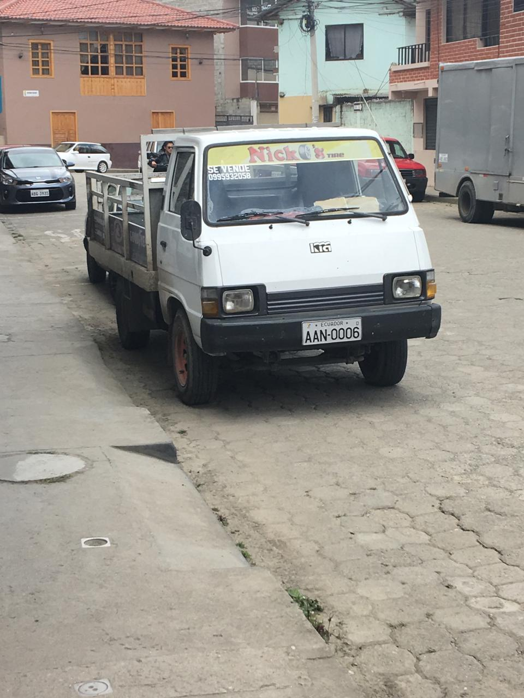

Lineas de transporte(buses)
Para la entrega de neumaticos a provincias y ciudades lejanas de la ciudad de Gualaceo, se hacen mediante buses interprovinciales
o provinciales dependiando de la ubicacion del usuario que requiera nuestro servicios.
Para ello el cliente debera hacerse cargo de los gastos del transporte publico, y lo enviaremos inmediatamente dependiendo el destino que
el usuario quiera.

Costo de entrega mediante camion
Para entregar mediante nuestros camiones, se lo realizan a ciudades o cantones
aledaños al canton Gualaceo, si la entrega se realiza un dia que no salgamos a recorrer por distintos cantones, se le
cobrara un costo adicional por la entrega a su domicilio.
Nosotros contamos con 3 camiones para la entrega de los neumaticos a los clientes.

Entregas y pagos en efectivo en el local
Si acude a nuestro local en el canton Gualaceo, los neumaticos se los entregara sellados
y dados inmediatamente para su uso, si el pago es en efectivo se le hara un descuento dependiendo de la cantidad de costoa pagar.